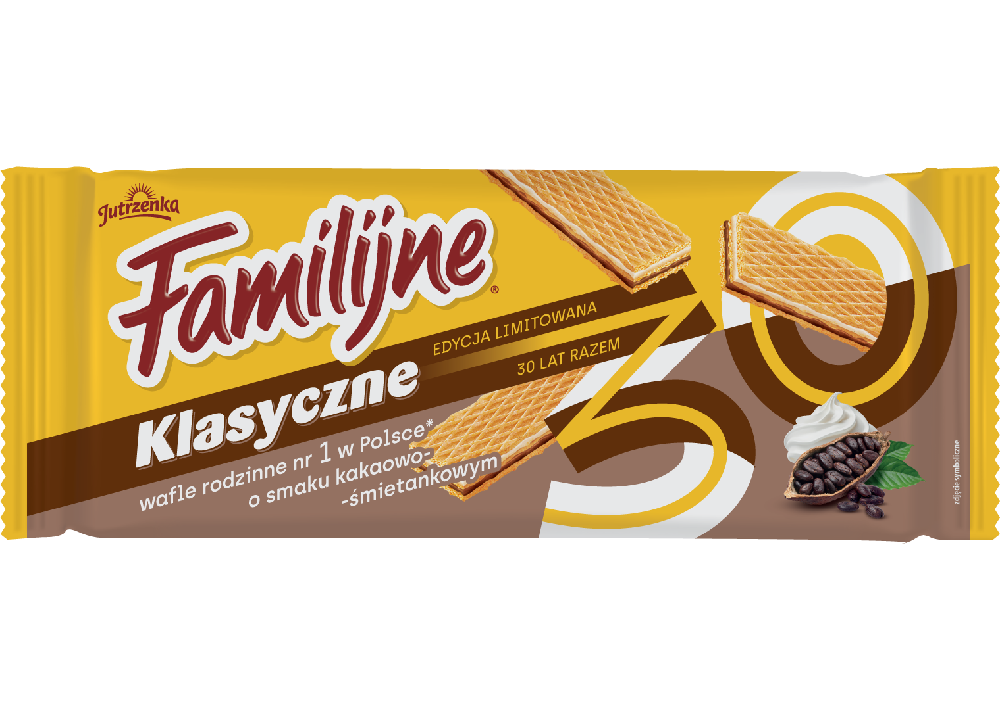
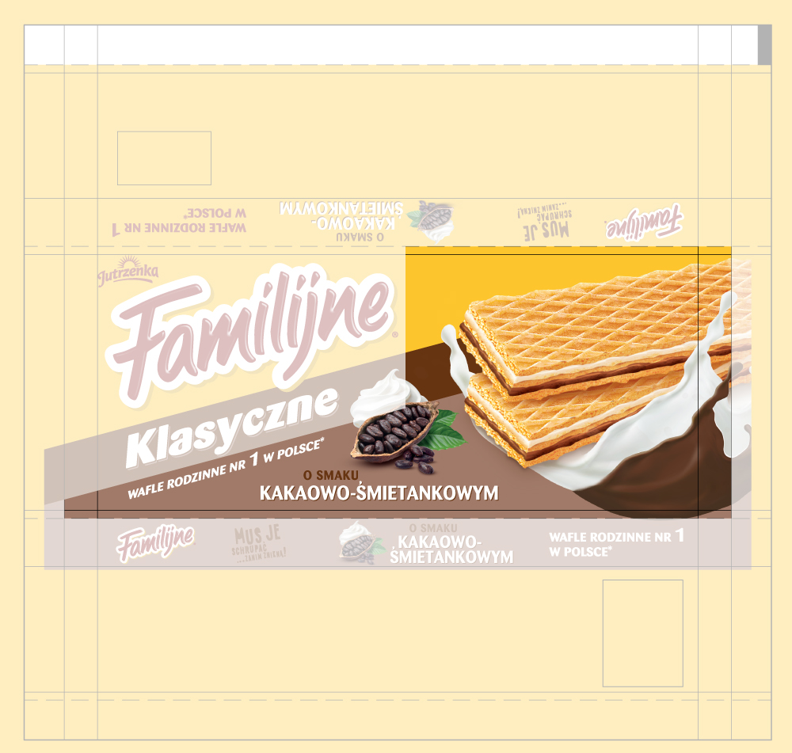
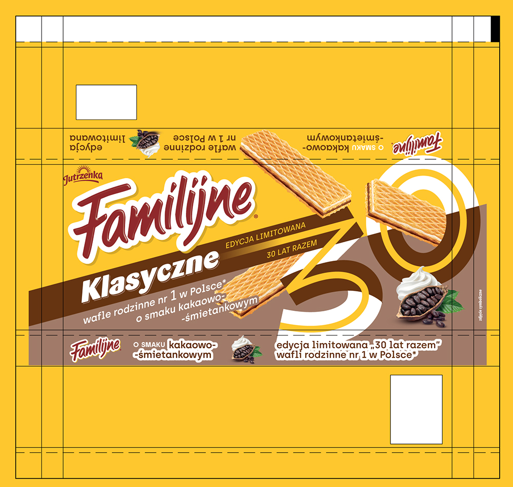
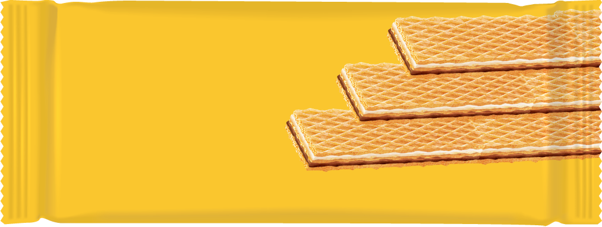
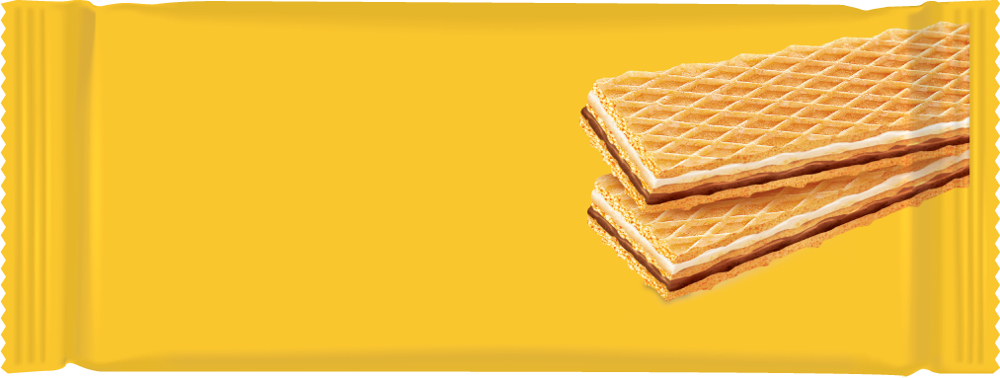
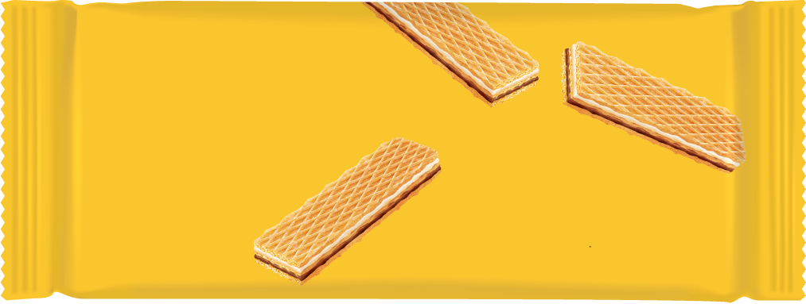

Young Creatives competition is aimed at junior employees in creative and marketing business, held by Klub Twórców Reklamy since 26 years ago. It gives young people a chance to work on real briefs for real clients. The contestants, competing in pairs, have 24 hours to complete their task, which is then judged by the industry professionals. More about Young Creatives competition here ▸.
This was my first time taking part in the competition. I teamed up with my friend, Klaudia Adamek ▸ and we represented Molecular Creative.

THE BRIEF Nearly 70% of Poles when asked about What is the first wafers brand that comes to mind, give the same answer - Familijne. The brief was to create the package that would commemorate 30th anniversary of the iconic brand. Our creative idea inspired by Miss Polonia, takes a twist on the sash received by pageant winers.
We were allowed to modify only a small part of the package. The logo, yellow colour and brown ribbon had to stay the same in its shape and form and at the same time, create a cohesive composition with the new design. Within these 1,5 square decimeters, we were required to include: wafers provided, cocoa and cream apetizer, ‘wafle rodzinne nr 1 w Polsce’ copy, ‘o smaku kakaowo-śmietankowym’ copy, visual celebration of the 30th anniversary of the brand and ‘limited edition‘ copy. Oh boy that was a lot...


Over the 30 years of the brand, Familijne has maintained a constant arrangement of wafers on its packaging: either parallel or card-hand spread. In our anniversary packaging, we propose to emphasise the celebration by dynamically scattering the wafers in a composition that suggests lightness, fun and sharing.



2025 redesign')" onmouseleave="document.getElementById('mouseComment').style.display = 'none'">© 2025 Mikołaj Grabowski, Klaudia Adamek